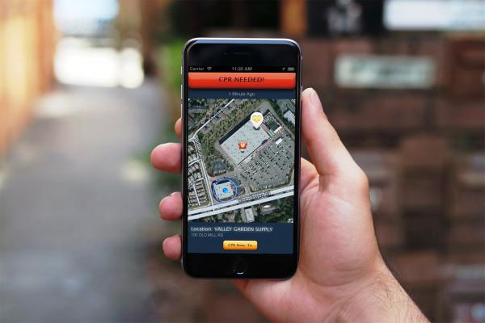

今回ご紹介する法則は、特に問題の解決に緊急性を帯びる際にこそ有効かもしれません。
解決を望む人たちだけでなく、問題が生じている場の近くにいる人たちを味方として巻き込んでいく“近くの人を協力者化”の法則です。
[Chapter 1] 事例から法則を読み解く
心肺停止の患者を“近くにいる人”と結ぶだけで、救われる命。

上記の図は見たことがありますでしょうか。
ドリンカーの救命曲線と呼ばれる図なのですが、呼吸の停止から時間の経過とともに、どの程度蘇生の可能性が残されているか？を示しています。
とある調査では、国内の救急隊が通報を受けてから現場に到着するまでに平均約6分がかかると言われていますから、6分後の蘇生率は約18％にまで低下してしまう。
だからこそ、近場に居合わせた人による、迅速な人工呼吸やAEDでの処置により、救えるはずだった命がひとつでも多く、救われるはずです。

では、AEDによる処置はというと、実際にどの程度行われているのでしょうか。
日本国内でいえば、厚生労働省研究班の調べによると、
・日本には約29万7千台のAEDが市民向けに設置されている一方で、
・市民に目撃された心肺停止症例は2万3797件どまり、
・つまりわずか3.7%のAEDしか利用されていない
といった現状があり、その背景には、AEDが設置されている場所がわからなかったこともあるそうです。
こうした状況は、日本だけでなく、海外でも共通しているといいます。
そんな現状に目をつけたのが、アメリカ・カリフォルニア州にあるNPO法人。
彼らは、心肺蘇生が必要な患者が出たときに、その情報を近くの訓練を受けた人々にアラームで知らせ、自身の居場所と患者、近くに設置してあるAEDの3点をつなげる地図とナビを表示させるアプリ“Pulse Point Respond”を開発しました。


さらに、このアプリは緊急連絡センターとも連携しています。
救急活動をリアルタイムで把握しながら、消防車や救急車がどこにいるのか、交通渋滞の状況などの情報も、アプリでチェックすることもできます。

問題解決策としての「アプリ」という出口は、それだけだと、実際に役立つよう機能するイメージが少々薄いかもしれません。
しかしながら、心肺停止という問題の「緊急性」と、生命維持のためには近くの処置できる人の力が必要という「重要性」の掛け算の中で、このアプリは確実に効力を発揮すると思います。
心臓が弱い人はもちろん、一般の人も“万が一の心肺停止”といったハプニングが起きた時、「お守り」としてこのアプリをインストールしたいはずです。
また、AEDの訓練を受けた人は、他人の役に立ちたくて身につけた技術をここぞという場面で発揮できるよう、やはりアプリをインストールしたいはず。
（もっといえば、万が一のときに自分のことを助けてほしいから、自分も“助ける側”の技術を身に付けようとする動きも期待できます。）
「情けは人のためならず」といいますが、まさにそうしたバランスの中で、緊急度の高い問題が生じている場の“近くにいる人たち”を、味方として、協力者として巻き込んでいく仕組み。
素晴らしいソリューションだと思います。
これと同様の考えで、救命措置の必要な患者の命を救う策として、近くにいるタクシー運転手を協力者に変えてしまう“UberFIRST-AID”という学生考案のアイデアがありますね。
UberFIRST-AID from Andrea Raia on Vimeo.
救急車を呼ぶと、同時に「Uber」にも救急事態発生場所を通知して、救急車が到着するまで事前に講習を受けた「Uber」の運転手が心臓マッサージなどの応急手当を施し、命を救うサポートをする仕組み。
こうした施策が、確実に、世の中をよくしていくのかもしれません。
＞＞＞＞＞＞＞＞＞＞＞＞＞＞＞＞
[ “近くの人を協力者化”の法則｜Point ]
◎問題が、すぐにでも解決が望まれる「緊急性」を孕むこと
◎問題現場の「近くの人」にも可能な協力・援助方法を考える
◎「問題と協力者を結ぶ仕組み」や「協力しやすい資格・ツール」を開発する
＞＞＞＞＞＞＞＞＞＞＞＞＞＞＞＞
以降では、この法則を念頭に置きながら、活用イメージを深めていきます。
[Chapter 2] 法則から事例を読み解く
行方不明になった子ども達をいち早く見つけるためには？
この章でご紹介する事例の舞台は、ブラジル。
この場所では、年間20万人もの人が行方不明になっているそうです。（多いですね…）

もちろん、彼らを探すのは容易ではありません。
原始的ですが効果ある方法「ポスターで呼びかける」にしても、人手も費用もかかってしまいます。
そんなとき、“近くの人を協力者化”の法則に則って考えると、どこの誰が協力者になってくれそうでしょうか？
（もちろん、行方不明ということで、問題解決の「緊急性」を孕んでいます）
まず考えうるのは、目撃情報の途絶えた地域の近くで暮らしている人々。
そして、その場所を中心にして同心円上に広がる、全国の国民でしょう。
そんな点に着目してHPが考案したのは、プリンターを使って行方不明者を探すプロジェクト“Print for Help”でした。
HPのプリンターには「設定したメールアドレスにデータが送られると勝手にプリントされる」という機能がついているそうで、 この機能を使い、“専用サイトに登録してくれた人のプリンターに行方不明者のポスターをプリントしてもらう”という活動を展開しました。
これにより、行方不明者のポスターが全国のプリンタからプリントされることになり、捜査網は一気に全国展開していきました。
（インクや紙、電気代は登録してくれた協力者の負担ですから、ローコストで実現が可能です。）


紙のプリント、といった使い古された技術も、使いようによっては素晴らしいツールや取り組みになり得ることを示したいい事例ではないでしょうか。
[Chapter 3] ブレスト・トライアル
「保育園落ちた日本死ね」問題を緩和させるには？
まさにいま、注目されているこの問題。
今朝、ニュースを見ていたら、こんな記事を見つけました。
「日本死ね→書いたの誰だ？→ #保育園落ちたの私だ → 国会前スタンディング」絶望の不思議な連鎖

3年ほど前から「待機児童」というキーワードで保育士不足が問題となっていましたが、いよいよ、収まりのつかなくなってきた状況なのではないでしょうか。
この問題、ハコ（保育園）の不足よりも「保育士の不足」が主な原因で起きている（つまり、子どもを看る人手不足により受け入れ数に限界がある）と言われています。
では、なぜ保育士が不足してしまうのか。
実は、保育士の数自体は増え続けています。
しかし、保育需要がそれ以上のスピードで増えており、また「有資格者の就業率の低下」が大きな要因です。
保育資格があるにも関わらず、保育現場で働かない人を「潜在保育士」とも呼ぶそうです。
では、保育士の離職原因とは何か。

クローズアップ現代｜深刻化する保育士不足 ～“待機児童ゼロ”への壁～ より
２の「雇用条件」については、賃金を早急に上げるしかありません。
（保育士の平均月給は約21万円ともいわれ、人を育てる職業に支払われる対価として、ありえないと個人的に思います。）
ただし、１、３、４の理由については、保育園の近隣住民やママ、元保育士、アクティブシニア等を巻き込んで“協力者化”する仕組みがもしできれば、緩和されうる問題かもしれません。
たとえば、「保育者との人間関係（ストレス）」が離職の原因にも挙がっていますが、この問題の一番のボトルネックは、「保護者が保育士の大変さを想像できない」ために、思いやりの欠けたコミュニケーションになりがちということではないでしょうか。
しかし保護者は、多くがいってみれば「保育の初心者」です。
プロの保育士の１日の大変さを想像するのは難しいかと思われますが、一方で、プロの実践する保育スキルの凄さは学ぶもの・尊敬できることが多々あるのでは、と思います。
であれば、保育園の近くに住むプレママや産休・育休中のママ（あるいはアクティブシニア）に対して、
・「親であれば誰もが知っておくべき保育のいろは」を有料サービスとして提供（＝保育士の賃金に還元）
・講習を受けた親には「保育士見習い簡易資格」を付与する
・簡易資格を持つ「育休中ママ」をバイトとして雇い、育休中ママの子どもも預かりながら、雑務の手伝いをして保育士の業務負担を軽減する
といった仕組みがもしワークすると、保育士を思いやる保護者が増えるだけでなく、保育士の賃金UPに貢献しながら家庭の保育レベルも上がり、育休中ママの小遣い稼ぎや転職を促しつつ、現場に入ることで保育園選びの参考となるかもしれません。
※現場の実情も知らず、的外れなことを考えている可能性は十二分に承知しております…
状況改善に向け、保育士の賃金と社会的地位を上げることは絶対必要だと思いますが、それにはとても時間と労力を要し、その間、悩む親御さんや子どもたちには拠りどころがありません。
ほんの例えば、ですが、並行して、例示させていただいたような取り組みも行われていくことで、少しでも状況が変わっていってくれたら嬉しいなと、心から思います。
そのためにもまず、あれこれ情報を集め、引き続き解決策を考えていきたいと思います。
※その他の類似施策は、以下URLにまとまっていますのでご参考ください。
Related Posts
-
 2016年6月18日
2016年6月18日
-
 2016年5月8日
2016年5月8日
-
 2016年4月11日
2016年4月11日